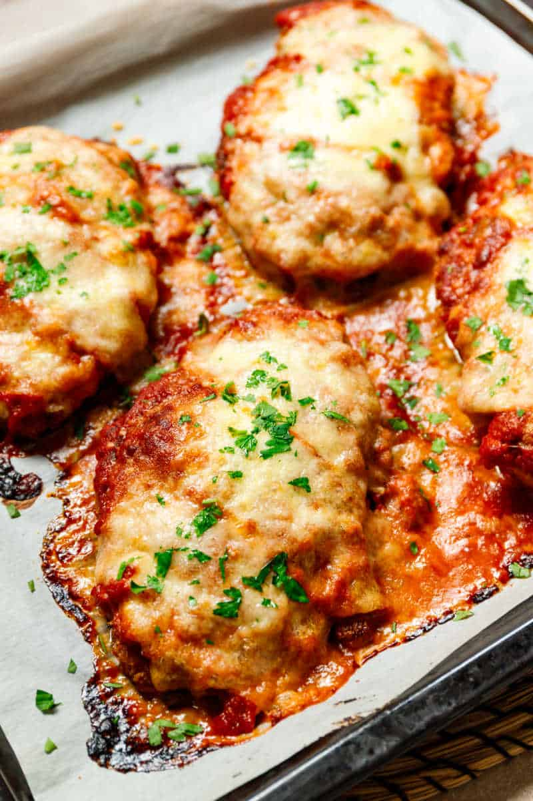

Keto Chicken Parmesan

Description
An easy meal for the carb-conscious chicken connoisseur.
Zesty and savory. Pairs well with Michelob Ultra.
Ingredients
Chicken preparation
- 4 small chicken breasts
- Salt
- Almond flour
- Parmesan cheese
- Garlic and Onion Powder
- Oil
Toppings preparation
- Tomato sauce
- Mozzarella cheese
- Parmesan cheese
Steps
1. Lightly dust the pounded chicken breast pieces in almond flour.
2. In a small bowl, whisk the eggs.
3. In a second bowl, add the remaining almond flour, along with the other dry ingredients.
4. Dip the chicken in the egg mix, followed by the dry mix, until completely coated.
5. Fry the chicken until golden brown.
6. Place the fried chicken breast pieces on a baking tray. Top with marinara sauce, mozzarella cheese, and parmesan cheese.
7. Bake for 10-15 minutes, until the cheese has melted.
Home